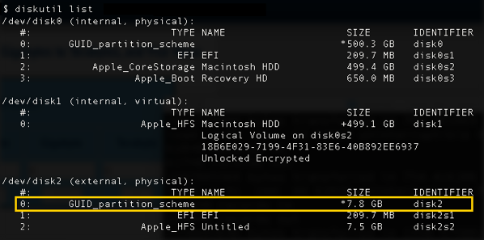
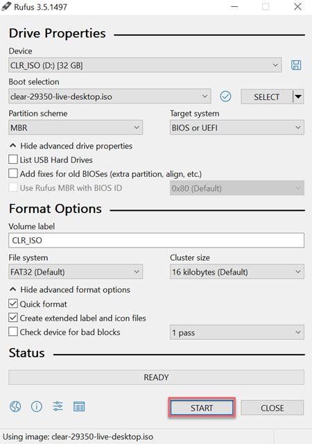
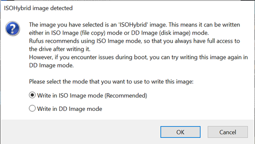

Create a bootable USB drive
Follow the instructions applicable to your system to create a bootable Clear Linux* OS USB drive:
- Create a bootable USB drive on Linux*
- Create a bootable USB drive on macOS*
- Create a bootable USB drive on Windows*
Prerequisites
- Use an 8GB or larger USB drive.
- Download the Clear Linux OS live boot image or interactive installer image from the Downloads page.
Create a bootable USB drive on Linux*
Make sure you have have completed all Prerequisites.
Before burning the image onto your USB drive, verify and decompress your image.
Burn the Clear Linux OS image onto a USB drive
警告
Burning an image formats the USB drive, and will destroy all pre-existing content. Back up your data before proceeding.
Open a terminal emulator and get root privilege.
sudo -s
Go to the directory with the decompressed image.
Plug in the USB drive.
Identify the USB drive using the lsblk command. This shows all drives attached to the system, including the primary hard disk. In the example output below, there are 4 drives (/dev/sda, /dev/sdb, /dev/sdc, and /dev/sdd) attached, where /dev/sda is primary drive. The remaining are three USB drives. The output also shows the mounted partitions (under the MOUNTPOINT column) for each drive.
lsblk
Example output:
NAME MAJ:MIN RM SIZE RO TYPE MOUNTPOINT sdd 8:48 1 15G 0 disk ├─sdd2 8:50 1 5G 0 part /run/media/user1/960c184f-3bb7-42b7-bcaf-0c1282 ├─sdd3 8:51 1 8G 0 part /run/media/user1/704f3382-b26d-4f34-af1b-cb9aab └─sdd1 8:49 1 2G 0 part sdb 8:16 1 14.8G 0 disk └─sdb1 8:17 1 14.8G 0 part /run/media/user1/PATRIOT_USB sdc 8:32 1 7.3G 0 disk └─sdc1 8:33 1 7.3G 0 part /run/media/user1/LINUX MINT sda 8:0 0 335.4G 0 disk ├─sda4 8:4 0 28G 0 part ├─sda2 8:2 0 3.7G 0 part [SWAP] ├─sda7 8:7 0 6G 0 part /home ├─sda5 8:5 0 1G 0 part /boot ├─sda3 8:3 0 954M 0 part /boot/efi ├─sda1 8:1 0 28G 0 part ├─sda8 8:8 0 30G 0 part / └─sda6 8:6 0 7.9G 0 part [SWAP]
You must unmount a USB drive before burning an image onto it. Note that some Linux distros automatically mount a USB drive when it is plugged in. Unmount a USB drive with the umount command followed by the device identifier/partition. For example:
umount /dev/sdd2 umount /dev/sdd3
Burn the image onto the USB drive. The example below burns an uncompressed image onto <your USB device>:
dd if=./clear-[version number]-[image type] of=<your USB device> oflag=sync bs=4M status=progress
警告
Not fully unmounting the USB drive before burning an image could cause file system checksum errors in it. If this happens, burn the image again ensuring all the USB drive partitions are unmounted first.
Create a bootable USB drive on macOS*
Make sure you have have completed all Prerequisites.
Before burning the image onto your USB drive, verify and decompress your image.
Burn the Clear Linux OS image onto a USB drive
警告
Burning an image formats the USB drive, and will destroy all pre-existing content. Back up your data before proceeding.
Launch the Terminal app.
Go to the directory with the decompressed image.
Plug in a USB drive and get its identifier:
diskutil list
This will list available disks and their partitions, as shown in Figure 1.
Figure 1: macOS - Get USB drive identifier
Unmount the USB drive identified in the previous step. For example:
diskutil umountDisk /dev/disk2
Burn the image onto the drive using the dd command. The example below burns an uncompressed image onto <your USB device>:
sudo dd if=./clear-[version number]-[image type] of=<your USB device> bs=4m
To speed up the imaging process, add an ‘r’ in front of the disk identifier. For example /dev/rdisk2.
Press <CTL>-T to check imaging progress.
Eject the USB drive.
diskutil eject /dev/disk2
{kind=link}
Create a bootable USB drive on Windows*
Make sure you have have completed all Prerequisites.
Before burning the image onto your USB drive, verify and decompress your image.
Burn the Clear Linux OS image onto a USB drive
警告
Burning an image formats the USB drive, and will destroy all pre-existing content. Back up your data before proceeding.
Download the Rufus utility to burn the image onto a USB drive. We use Rufus 3.5 here. Only use the latest version of Rufus.
Plug in the USB drive and open Rufus.
Under Boot selection, click the SELECT button.
Find and select the previously extracted Clear Linux OS image file.
Click the START button. See Figure 2.
Figure 2: Rufus utility
When the dialogue appears, select Write in ISO image mode (Recommended). See Figure 3.
Figure 3: ISOHybrid image detected
Select the Windows taskbar menu for USB and select eject.
{kind=link}
{kind=link}